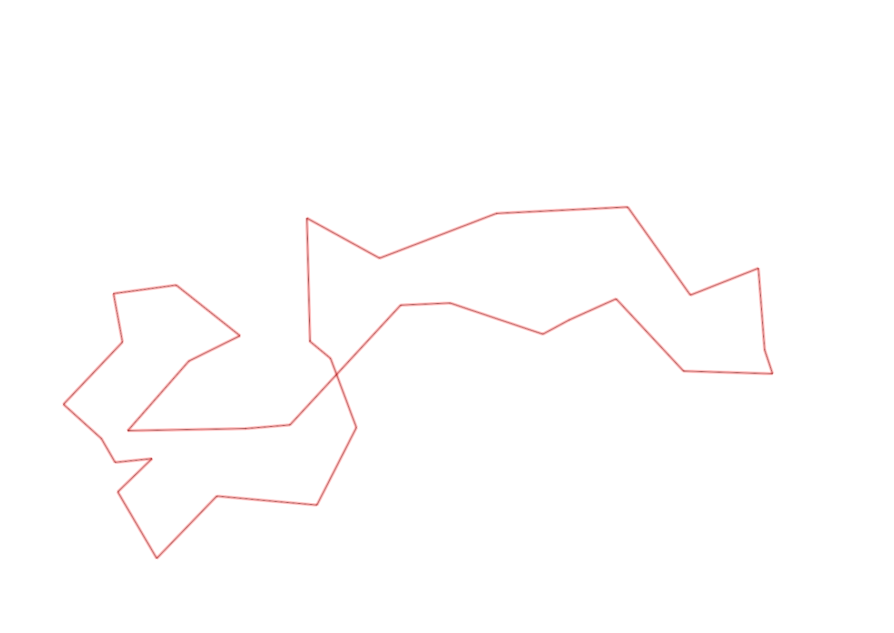
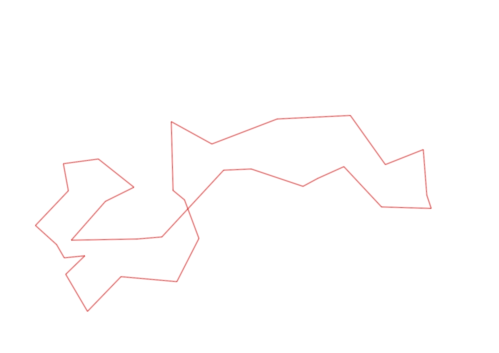

| Control |
Points |
Time Punched |
Distance |
Your Time |
Pace |
Place |
Fastest Time |
Median Time |
% Behind Fastest |
| 127 |
20 |
|
0.06 |
0:00:34 |
09:26 |
16 / 30 |
0:00:01 |
0:00:32 |
3300% |
| 42 |
40 |
|
0.17 |
0:01:16 |
07:27 |
2 / 20 |
0:01:06 |
0:01:52 |
15% |
| 61 |
60 |
|
0.21 |
0:02:27 |
11:40 |
2 / 20 |
0:02:20 |
0:03:34 |
5% |
| 59 |
50 |
|
0.24 |
0:01:47 |
07:25 |
1 / 19 |
0:01:47 |
0:02:30 |
0% |
| 77 |
70 |
|
0.21 |
0:01:36 |
07:37 |
3 / 17 |
0:01:25 |
0:02:33 |
12% |
| 40 |
40 |
|
0.18 |
0:01:16 |
07:02 |
1 / 18 |
0:01:16 |
0:02:38 |
0% |
| 41 |
40 |
|
0.11 |
0:00:32 |
04:50 |
3 / 20 |
0:00:28 |
0:01:07 |
14% |
| 71 |
70 |
|
0.09 |
0:00:33 |
06:06 |
1 / 12 |
0:00:33 |
0:01:12 |
0% |
| 69 |
60 |
|
0.06 |
0:01:20 |
22:13 |
2 / 5 |
0:01:13 |
0:01:26 |
9% |
| 53 |
50 |
|
0.12 |
0:01:33 |
12:55 |
5 / 26 |
0:01:16 |
0:01:51 |
22% |
| 44 |
40 |
|
0.2 |
0:01:50 |
09:10 |
14 / 22 |
0:00:39 |
0:01:40 |
182% |
| 32 |
30 |
|
0.12 |
0:00:43 |
05:58 |
1 / 22 |
0:00:43 |
0:01:19 |
0% |
| 63 |
60 |
|
0.15 |
0:01:08 |
07:33 |
2 / 25 |
0:01:05 |
0:01:29 |
4% |
| 126 |
20 |
|
0.19 |
0:00:54 |
04:44 |
1 / 2 |
0:00:54 |
0:01:37 |
0% |
| 130 |
30 |
|
0.14 |
0:00:22 |
02:37 |
4 / 19 |
0:00:00 |
0:00:33 |
-% |
| 54 |
50 |
|
0.22 |
0:01:00 |
04:32 |
1 / 2 |
0:01:00 |
0:01:13 |
0% |
| 60 |
60 |
|
0.28 |
0:01:32 |
05:28 |
1 / 3 |
0:01:32 |
0:03:53 |
0% |
| 38 |
30 |
|
0.11 |
0:01:15 |
11:21 |
8 / 15 |
0:00:00 |
0:01:15 |
-% |
| 92 |
90 |
|
0.39 |
0:02:47 |
07:08 |
1 / 1 |
0:02:47 |
0:02:47 |
0% |
| 47 |
40 |
|
0.12 |
0:02:40 |
22:13 |
5 / 16 |
0:01:07 |
0:04:40 |
138% |
| 48 |
40 |
|
0.23 |
0:02:14 |
09:42 |
1 / 7 |
0:02:14 |
0:03:31 |
0% |
| 64 |
60 |
|
0.07 |
0:00:45 |
10:42 |
2 / 14 |
0:00:38 |
0:01:05 |
18% |
| 49 |
40 |
|
0.12 |
0:00:57 |
07:55 |
2 / 12 |
0:00:55 |
0:01:28 |
3% |
| 46 |
40 |
|
0.23 |
0:02:06 |
09:07 |
1 / 8 |
0:02:06 |
0:02:39 |
0% |
| 75 |
70 |
|
0.21 |
0:02:14 |
10:38 |
2 / 7 |
0:02:06 |
0:02:33 |
6% |
| 56 |
50 |
|
0.06 |
0:00:28 |
07:46 |
2 / 8 |
0:00:25 |
0:00:39 |
12% |
| 81 |
80 |
|
0.19 |
0:00:54 |
04:44 |
1 / 7 |
0:00:54 |
0:01:17 |
0% |
| 52 |
50 |
|
0.17 |
0:01:09 |
06:45 |
1 / 6 |
0:01:09 |
0:01:25 |
0% |
| 109 |
100 |
|
0.26 |
0:01:20 |
05:07 |
1 / 9 |
0:01:20 |
0:02:00 |
0% |
| 123 |
20 |
|
0.31 |
0:01:36 |
05:09 |
1 / 10 |
0:01:36 |
0:02:50 |
0% |
| 57 |
50 |
|
0.3 |
-1 day, 23:19:12 |
77:44:00 |
1 / 3 |
-1 day, 23:19:12 |
0:02:50 |
0% |
| 107 |
100 |
|
0.2 |
0:00:00 |
00:00 |
1 / 21 |
0:00:00 |
0:02:52 |
-% |
| Finish |
0 |
|
0.29 |
0:50:44 |
2:54:56 |
2 / 2 |
0:02:49 |
0:26:46 |
1701% |
Total Distance Covered: 6.01km
Points Scored: 1650
Late Penalty: 0
Final Score: 1650
Total Time: 0hours 50minutes 44seconds
Efficiency: 274.54 points/km
 
